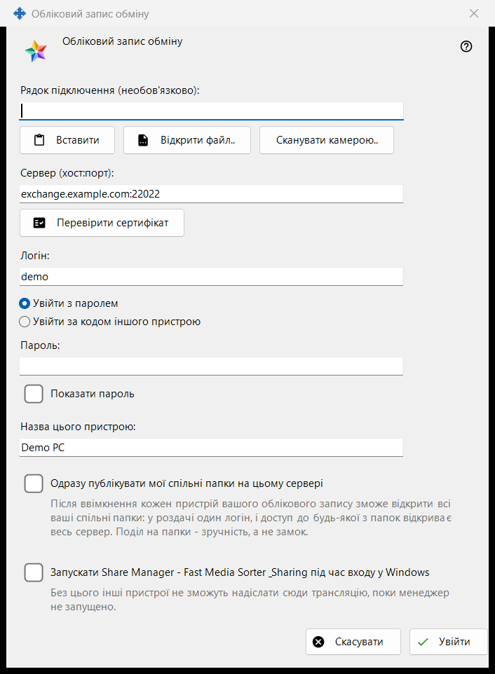
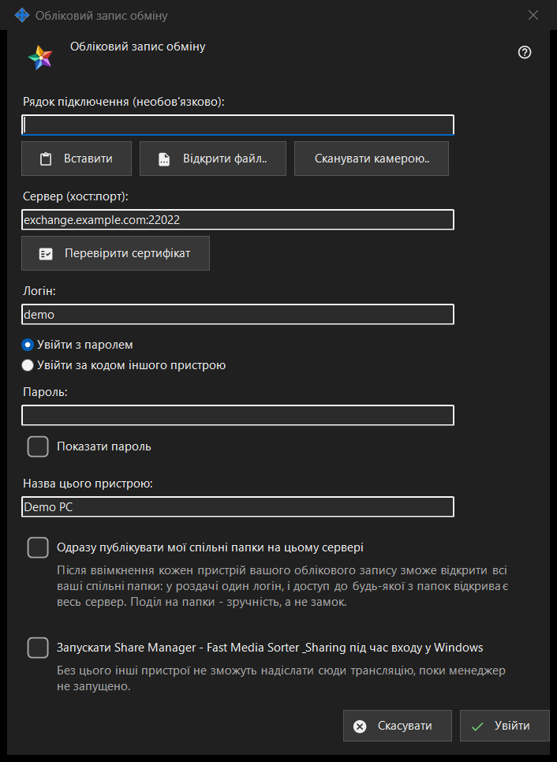

Обліковий запис обміну
Призначення
Входить із цього ПК як пристрій облікового запису на сервері Media Exchange Server. Вікно відкривається кнопкою «Увійти..» на сторінці «Обліковий запис обміну» в налаштуваннях Share Manager, а також кнопкою «Опублікувати через сервер обміну..», яка одразу позначає пункт публікації.


Порядок дій
- За бажання вставте, відкрийте або відскануйте рядок підключення: він заповнить сервер і логін.
- Натисніть «Перевірити сертифікат»; якщо система йому не довіряє й відбитка немає в рядку, звірте відбиток із названим оператором і натисніть «Довіряти цьому сертифікату».
- Введіть логін і пароль або код сполучення.
- Задайте назву пристрою та параметри.
- Натисніть «Увійти».
Елементи вікна
Рядок підключення
Поле «Рядок підключення (необов'язково):» приймає рядок, який ви вставляєте кнопкою «Вставити», завантажуєте з файлу .fmsexch або з картинки з QR-кодом кнопкою «Відкрити файл..» чи зчитуєте кнопкою «Сканувати камерою..». Рядок лише заповнює сервер і логін: до натискання «Увійти» підключення не відбувається. Рядок із відбитком закріплює цей сертифікат, і звіряти нічого вручну не потрібно. Рядок із запрошенням перемикає вікно на реєстрацію. Непридатний рядок отримує однорядкову відмову.
Сервер і сертифікат
«Перевірити сертифікат» підключається до сервера з поля «Сервер (хост:порт):» і показує «Відбиток сертифіката сервера:». Якщо система довіряє сертифікату, закріплювати його не потрібно. Інакше звірте відбиток із тим, який дав оператор сервера, і натисніть «Довіряти цьому сертифікату»: лише ця кнопка приймає сертифікат, невідомий системі. Зміна тексту сервера скасовує перевірку. Enter нічого не робить, якщо сертифікат не прийнято, тому пароль не піде на сервер, за який ніхто не поручився.
Логін, пароль і код сполучення
Введіть «Логін:» і виберіть «Увійти з паролем» («Пароль:», із прапорцем «Показати пароль») або «Увійти за кодом іншого пристрою» («Код сполучення:», його видає інший пристрій того самого облікового запису). Поле очищається в момент надсилання значення за будь-якого результату; пристрій зберігає лише токен, а не пароль.
Реєстрація за запрошенням
Якщо рядок містить запрошення, два варіанти входу замінюються реєстрацією: «Пароль облікового запису:» і «Пароль ще раз:» задають новий пароль, який має відповідати показаним правилам (не коротше 10 символів, із великою та малою латинською літерою і цифрою), а кнопка називається «Створити обліковий запис».
Назва пристрою та параметри
«Назва цього пристрою:» (до 64 символів) спочатку дорівнює імені комп'ютера. Параметр «Одразу публікувати мої спільні папки на цьому сервері» вимкнено, якщо ви не прийшли через «Опублікувати через сервер обміну..»; після ввімкнення кожен пристрій вашого облікового запису може відкрити всі ваші спільні папки, бо в роздачі один логін. Останній параметр запускає Share Manager під час входу у Windows (за замовчуванням вимкнено), щоб інші пристрої могли надсилати трансляції на цей ПК.
Один сервер
Пристрій належить одному серверу. Вхід на інший сервер запитує, чи залишити поточний, і публікація на старому сервері припиняється. Після невдалої спроби зв'язку кнопка «Чому не підключається?..» відкриває перевірку підключення.
Налаштування менеджера · Налаштування спільного доступу SFTP · Налаштування сервера обміну